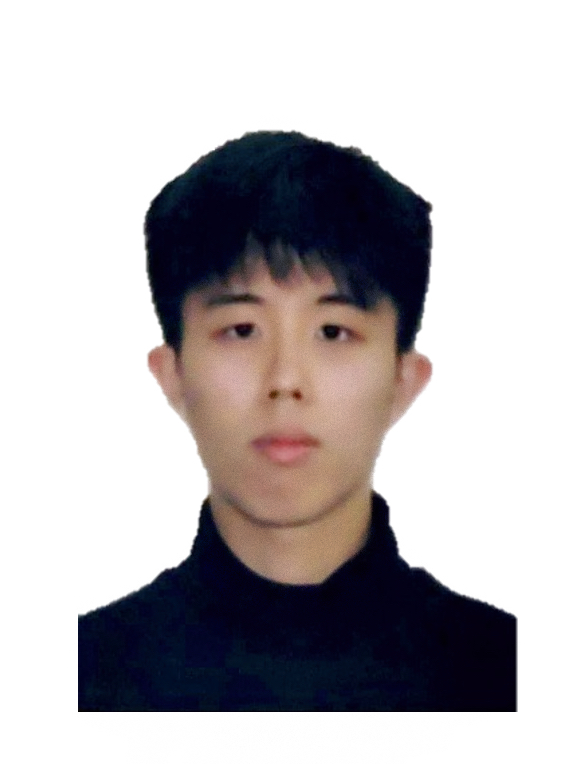
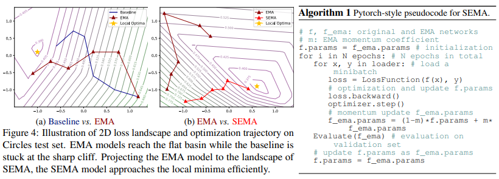
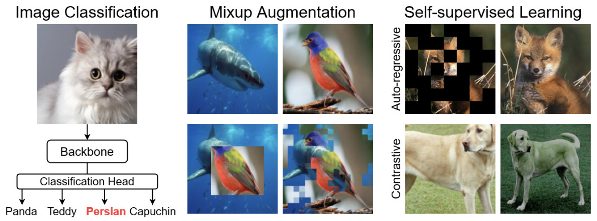
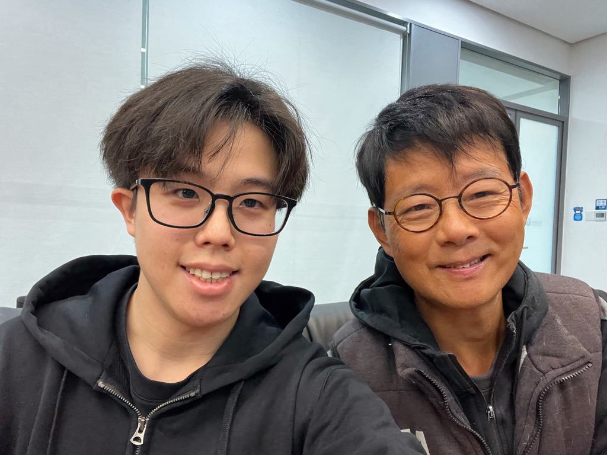
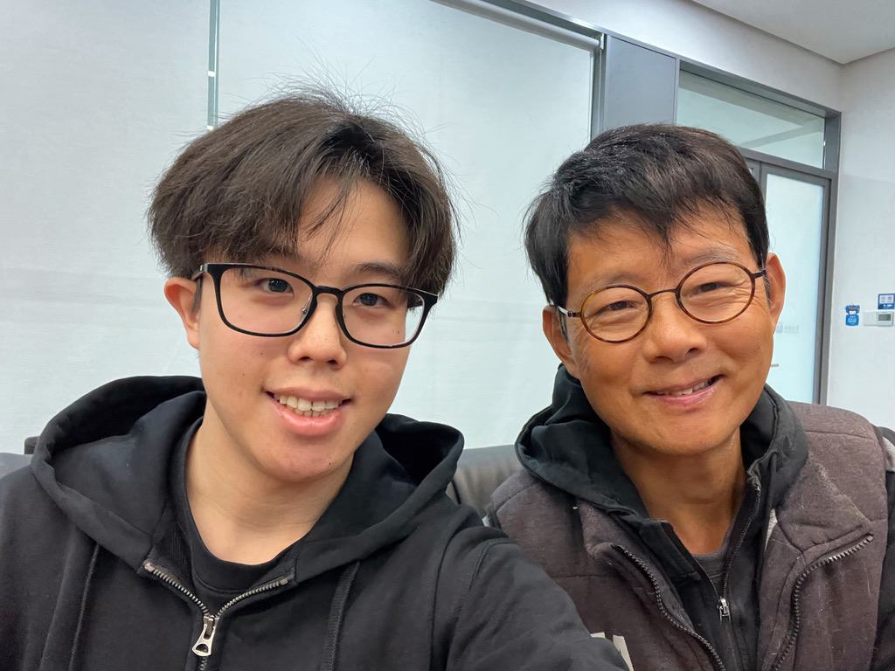

|  | Zedong Wang (王泽栋) 🇭🇰 |
About Me
News
- [Mar. 2024] Fortunate to become research intern at The Hong Kong University of Science and Technology (HKUST), under the supervision of Prof. Dan Xu.
- [Feb. 2024] Hornored to serve as a reviewer at ECCV 2024, ICML 2024, and ICPR 2024.
- [Jan. 2024] One paper on efficient visual network, MogaNet, is accepted by ICLR 2024. Code & weights are released (115 stars). Welcome to discuss, use, and star!
- [Jan. 2024] Co-authored paper on semi-supervised learning, SemiReward, is accepted by ICLR 2024. Congrats to Siyuan Li.
- [Jan. 2024] Hornored to serve as an emergency reviewer for ICLR 2024.
- [Dec. 2023] Co-authored preprint on self-supervised learning, Masked Modeling on Vision and Beyond.
- [Sep. 2023] Co-authored paper on video prediction, OpenSTL, is accepted by NeurIPS 2023. Congrats to Cheng Tan.
- [Jul. 2023] Got my B.Eng. degree from Huazhong University of Science and Technology! Special thanks to my supervisor Prof. Xinggang Wang for his generous support!
- [May. 2023] One preprint on data augmentation, SAMix. The first method solving the 2 remaining challenges in mixup at once for both SL & SSL scenarios.
- [May. 2023] One preprint on vision network architecture, MogaNet. A new family of pure convolutional architecture covering 5M~100M+ model scales with great performance. Code and weights are all released! Welcome to discuss, use, star and cite!
- [Nov. 2022] One preprint on data augmentation, OpenMixup. The first mixup benchmark for visual classification and more.
- [Sep. 2022] Maintain an open-source toolbox, OpenMixup (556 stars), for both supervised, and unsupervised representation learning based on PyTorch. On updating!
- [Jul. 2022] Fortunate to become visiting student at Westlake University, under the supervision of Chair Prof. Stan Z. Li.
- [Sep. 2021] Fortunate to become research intern in HUST Vision Lab, under the supervision of Prof. Xinggang Wang.
- [Jun. 2021] Fortunate to become research intern in MMLab at Shenzhen Institute of Advanced Technology (SIAT), CAS.
Research Interests
Currently, I mainly focus on Multi-modal Learning and Multi-task Scene Understanding. I am also interested in Computer Vision on:- Data-level: Mixup Augmentation and Label-Efficient Learning [OpenMixup, SAMix, SemiReward].
- Network-level: Efficient Deep Network Architecture Design [MogaNet].
- Framework-level: Generation with Vector Quantization, Diffusion Models, and more.
Education
- 2019.09-2023.06 B.Eng. in EE at Huazhong University of Science and Technology. Supervisor: Prof. Xinggang Wang.
Internship
- 2024.03-now Research on multi-modal multi-task learning at HKUST. Advisor: Prof. Dan Xu.
- 2022.07-2024.03 Research on representation learning at Westlake University. Advisor: Chair Prof. Stan Z. Li.
- 2021.09-2023.06 Research on few-shot semantic segmentation at HUST Vision Lab. Advisor: Prof. Xinggang Wang.
- 2021.06-2021.09 Research on semantic segmentation & text spotting at SIAT-MMLab. Advisor: Dr. Bin Fu.
- 2020.06-2021.04 Research on remote sensing high-res semantic segmentation at CAS. Advisor: Dr. Xiaoping Du.
Publications
Selected Preprints (*: Equal Contribution. †: Corresponding Author.):
|  |
Switch EMA: A Free Lunch for Better Flatness and Sharpness |
|
|
Masked Modeling for Self-supervised Representation Learning on Vision and Beyond |
|  |
OpenMixup: A Comprehensive Mixup Benchmark for Visual Classification |
|
|
Boosting Discriminative Visual Representation Learning with Scenario-Agnostic Mixup |
Conferences (As First Author):
 |
MogaNet: Multi-order Gated Aggregation Network |
Conferences (As Co-author):
|
|
SemiReward: A General Reward Model for Semi-supervised Learning |
 |
OpenSTL: A Comprehensive Benchmark of Spatio-Temporal Predictive Learning |
Journals:
Services
Program committee member | Reviewer:
- Conference Reviewer / PC Member: European Conference on Computer Vision (ECCV), 2024
- Journal Reviewer:
International Conference on Machine Learning (ICML), 2024
IAPR International Conference on Pattern Recognition (ICPR), 2024
International Conference on Learning Representations (ICLR), TinyPapers, 2024
Membership:
- China Society of Image and Graphics (CSIG), Student Member, 2023
Acknowledgement
My research career cannot be possible without the generous support from all my awesome mentors, collaborators, and friends:- Prof. Xinggang Wang, Prof. Yu Zhou, Prof. Xin Yang at Huazhong University of Science and Technology (HUST).
- Chair Prof. Stan Z. Li, Dr. Siyuan Li, Dr. Zicheng Liu, Dr. Haitao Lin, Dr. Jiangbin Zheng, Mr. Siqi Ma at Westlake University.
- Prof. Dan Xu, Dr. Zhenxing Mi, Dr. Yuxin Wang, Dr. Yu Cai, Mr. Yiwei Chen at Hong Kong University of Science and Technology.
- Dr. Bin Fu, Mr. Aozhong Zhang at SIAT-MMLab, Shenzhen Institute of Advanced Technology, Chinese Academy of Sciences.
- Dr. Xiaoping Du at Institute of Remote Sensing and Digital Earth, Chinese Academy of Sciences.
Fragments of Memories
Wonderful memories with my advisors: Prof. Xinggang Wang at HUST, and Chair Prof. Stan Z. Li at Westlake University. 
